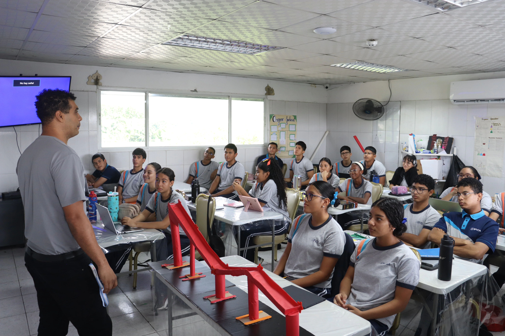

Materiales y Guías Didácticas
Accede en cualquier momento a las diapositivas de clase, documentos complementarios, enlaces a bibliotecas digitales y lecturas compartidas por tus profesores.

La plataforma educativa oficial del Colegio Buen Pastor que conecta tus clases presenciales con recursos multimedia, tareas digitales y seguimiento académico continuo las 24 horas del día.
Diseñada con una navegación intuitiva y herramientas pedagógicas que permiten a cada estudiante organizar su horario, descargar lecciones y entregar asignaciones sin complicaciones.

Accede en cualquier momento a las diapositivas de clase, documentos complementarios, enlaces a bibliotecas digitales y lecturas compartidas por tus profesores.
Carga tus proyectos individuales o grupales en formato PDF, documentos o presentaciones con sello de hora y confirmación de recepción automática.
Comprueba tus conocimientos mediante cuestionarios formativos con corrección inmediata, cronómetros de práctica y retroalimentación pregunta por pregunta.
Consulta tus notas ponderadas por trimestre, comentarios pedagógicos del docente y observaciones para fortalecer tus hábitos de estudio.
Tres sencillos pasos para iniciar tu sesión y comenzar a interactuar con tus asignaturas desde el primer día de clases.
Tu usuario y contraseña institucional son entregados por secretaría al formalizar la matrícula. Tu usuario generalmente corresponde a tu número de cédula escolar.
Visita sai.bpvda.edu.pa e inicia sesión. En tu panel principal verás las asignaturas activas de tu nivel con los avisos del docente.
Revisa las fechas límite en el calendario virtual, descarga tus recursos y sube tus tareas antes del cierre para mantener un rendimiento óptimo.
Canales rápidos para resolver dificultades de acceso, olvido de contraseñas o configuración de tus dispositivos móviles.
Si olvidaste tu clave o tienes problemas para ingresar, solicítalo al departamento de informática o a secretaría del plantel.
Solicitar por WhatsApp ↗Puedes descargar la app oficial de Moodle para iOS y Android e ingresar la dirección sai.bpvda.edu.pa para recibir alertas.
Los acudientes cuentan con la app Edvoice para circulares, reportes de asistencia y comunicaciones oficiales del colegio.
Ingresar a Edvoice ↗Inicia sesión ahora y descubre todo lo que tus profesores han preparado para fortalecer tus materias y enriquecer tu aprendizaje.